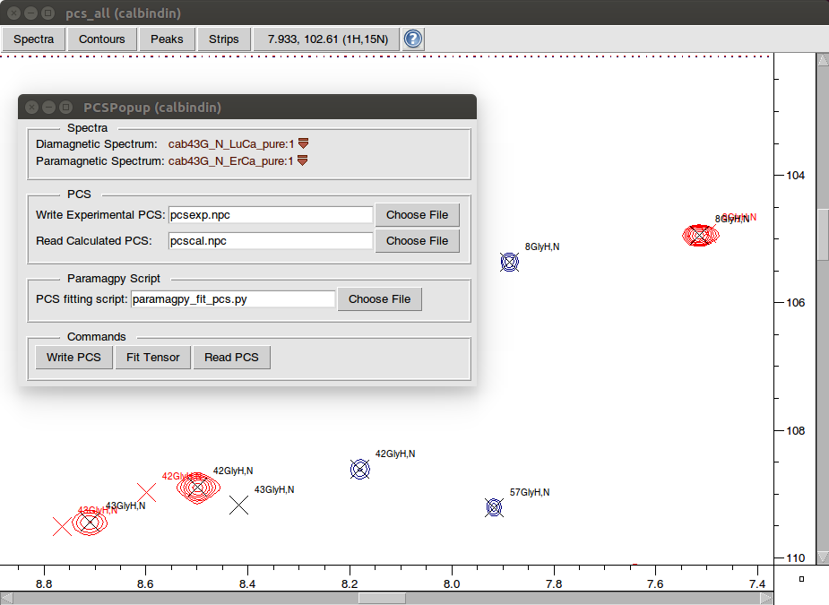
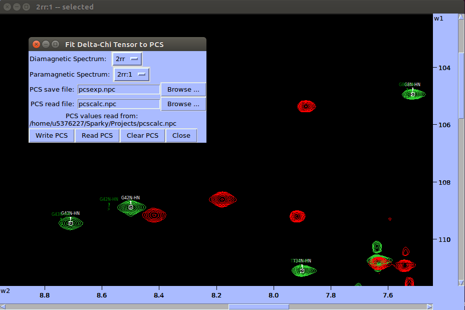

NMR Software Macros¶
Paramagpy includes scripts for reading/writing PCS values directly from popular NMR software. This drastically improves the iterative process of tensor fitting.
CCPNMR Analysis 2.4¶
Download the two scripts:
In the first line of the script paramagpy_fit_pcs.py, replace the shebang with the path to the python version on your machine that contains the paramagpy installation. On my computer this is set to.
#!/usr/bin/python3
Open CCPNMR analysis and navigate to Menu->Macro->Organise Macros. At the lower right click Add Macro and open the script paramagpy_ccpnmr_macro.py, then select paramagpyMACRO and click Load Macro. You can then select if from the list and click Run to reveal the screen below.
The popup window allows you to select a diamagnetic and paramagnetic spectrum and has 3 available buttons:
Write PCS: This will calculate the difference between assigned peaks in the paramagnetic and diamagnetic spectra and write them to a .npc file (as specified in the relevant field).
Fit Tensor: This will call the paramagpy script paramagpy_fit_pcs.py to fit the tensor the the written PCS values.
Read PCS: This will read back-calculated PCS values from file (as specified in the relevant field) and plot the expected peaks on the paramagnetic spectrum in red.
Note, to alter the parameters for fitting of the PCS tensor, you can change the values within the script paramagpy_fit_pcs.py.
Sparky¶
Download the 3 scripts:
Place the first two scripts paramagpy_sparky_macro.py and sparky_init.py in the Sparky directory ~/Sparky/Python. Note that the Sparky directory usually contains the Projects, Lists and Save folders. You may need to create the Python directory here in which to place the two scripts.
Place the third script paramagpy_fit_pcs.py in your home directory.
Open Sparky and navigate to Extensions->Read and write PCS files.
The popup window allows you to select a diamagnetic and paramagnetic spectrum and has 3 available buttons:
Write PCS: This will calculate the difference between assigned peaks in the paramagnetic and diamagnetic spectra and write them to a .npc file (as specified in the relevant field).
Read PCS: This will read back-calculated PCS values from file (as specified in the relevant field) and plot the expected peaks on the paramagnetic spectrum in green.
Clear PCS: This will remove all calculated PCS peaks from the spectrum.
Note, to perform the tensor fitting, you will need to execute the paramagpy script in a separate terminal including an argument with the experimental PCS file such as:
user@computer:~$ ./paramagpy_fit_pcs.py pcsexp.npc
To alter the parameters for fitting of the PCS tensor, you can change the values within the script paramagpy_fit_pcs.py.